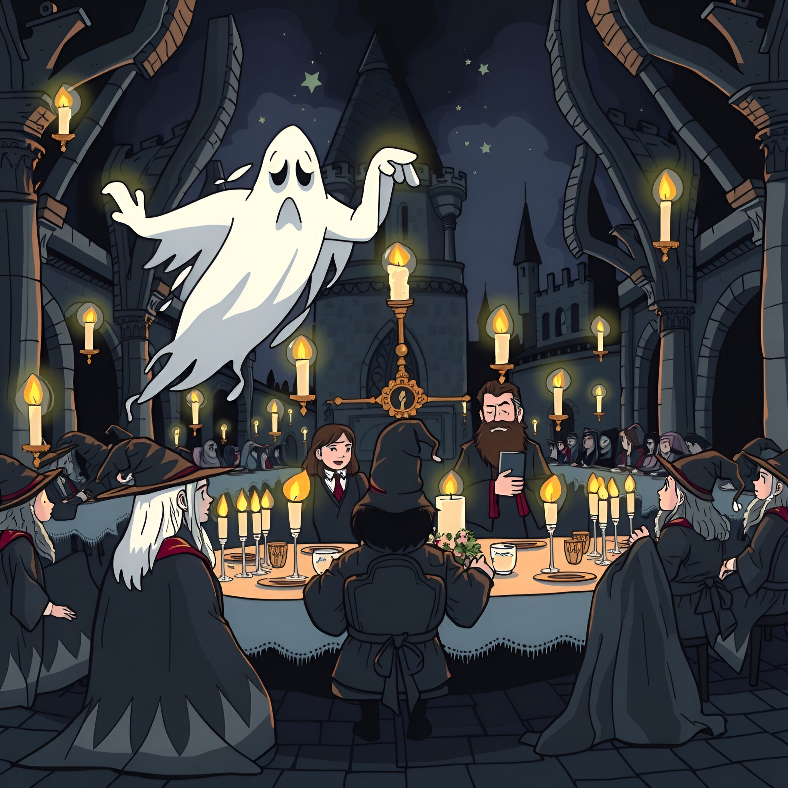
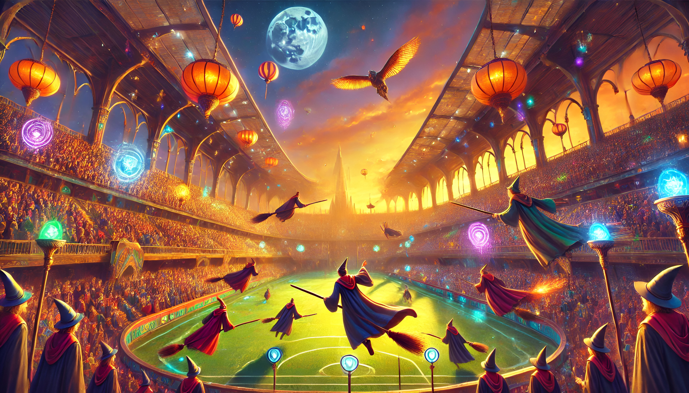
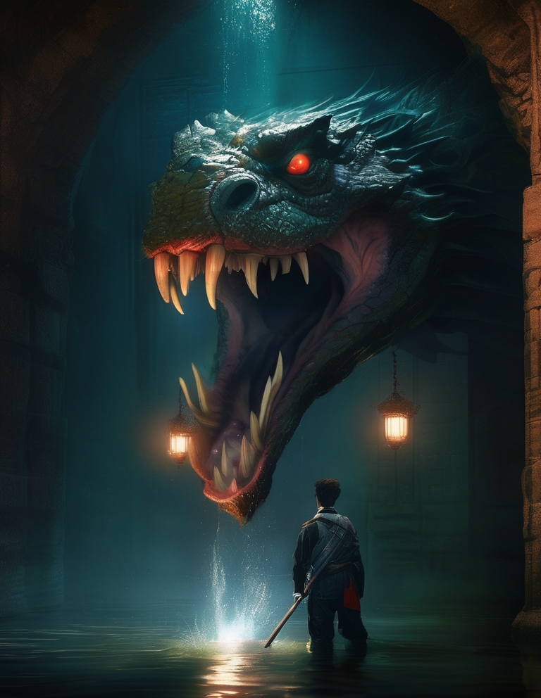
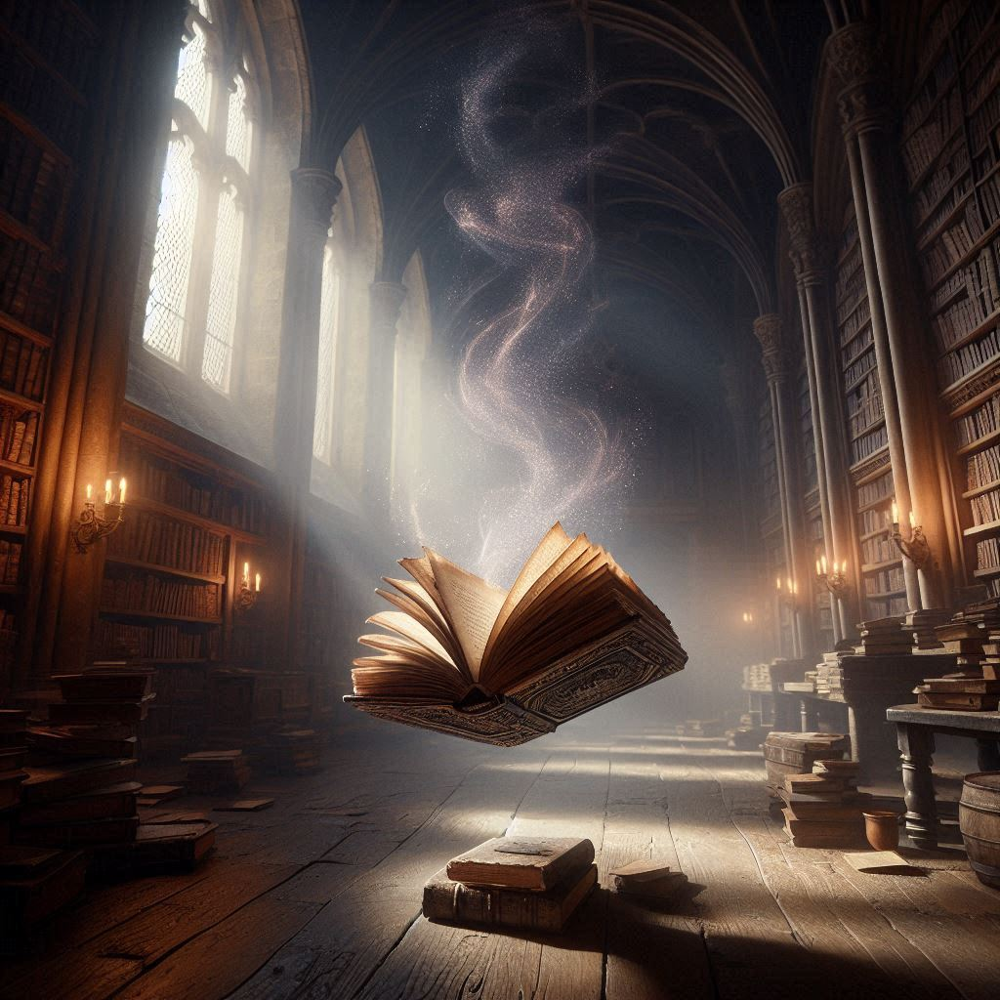

Bienvenue dans notre projet dédié à l'exploration du monde fascinant de l'intelligence artificielle (IA) et des générateurs d'images ! À une époque où la technologie évolue à une vitesse impressionnante, l'IA repousse sans cesse les limites de la créativité humaine, ouvrant de nouvelles perspectives dans le domaine artistique et graphique. Ce site a pour vocation de vous guider à travers les différentes applications des générateurs d'images basés sur l'IA, leurs possibilités et leurs enjeux.
Que vous soyez passionné par l'art numérique, professionnel en quête d'outils novateurs, ou simple curieux, notre projet vous permettra de comprendre comment ces systèmes fonctionnent, comment ils transforment les idées en œuvres visuelles et, surtout, comment ils redéfinissent notre conception de la création. Au fil des articles, des démonstrations et des analyses, nous vous invitons à plonger dans l'univers de l'IA créative et à découvrir comment elle révolutionne le paysage artistique.
Nous avons choisi le thème d’Harry Potter car il stimule notre imagination et nous offre une liberté créative immense. Cet univers riche en magie, lieux fantastiques et personnages emblématiques nous permet de réinventer des scènes ou d’en créer de nouvelles tout en explorant un monde qui fait rêver depuis des générations.
Images générées
Image 1 générée via ChatGPT/Dall-E
Scène :
La scène de rentrée à Poudlard dans le réfectoire est magique et animée. Les élèves, vêtus de leurs robes de sorcier, se pressent autour des tables, tandis que des chandelles flottent au-dessus d’eux, illuminant la pièce d’une lueur chaleureuse. Les grandes fenêtres offrent une vue imprenable sur le ciel étoilé. La répartition des premières années se fait sous les yeux des élèves plus âgés, certains rigolent et discutent, d’autres se concentrent sur leur repas.
Prompt utilisé :
The time is set at night, we are in a very huge castle full of wizards. It's dinner time so we are at the cantine in the castle. There are multiple flying candles. Oh what's this??? A beheaded ghost??? Spooky. Student wizards are waiting at their table to eat. Oh look at this guy with a talking wizard hat on his head and all the teachers sitting at a big table behind him.
Image 2 générée via ChatGPT/Dall-E
Scène :
Dans Harry Potter et la Coupe de Feu lors de la Coupe du Monde de Quidditch. Des milliers de spectateurs sont rassemblés dans les tribunes, tandis que les équipes s’affrontent sur un terrain vaste et vibrant. Les joueurs, montés sur leurs balais, virevoltent à une vitesse fulgurante, poursuivant le Vif d’or et lançant les Quaffles à travers les cerceaux. L’air est électrique, chaque mouvement provoque des cris d’excitation et des acclamations. Les supporters rivalisent de chants et de cris, créant une atmosphère frénétique et envoûtante.
Prompt utilisé :
A magical quidditch match taking place in a vibrant stadium filled with spectators, with wizards flying on broomsticks. The game is in the late afternoon, casting a warm golden glow over the scene. The sky is a mix of orange and purple as the sun sets. The stadium is filled with magical energy, with floating lanterns and cheering fans. Several players are seen chasing the quaffle and dodging bludgers, while one is in pursuit of the golden snitch. The wizards are dressed in colorful robes, and the stadium features enchanted elements like glowing banners and magical creatures in the stands.
Image 3 générée via Leonardo Ai : 
Scène :
Dans les profondeurs de la Chambre des Secrets, Harry fait face au basilic, un serpent monstrueux aux écailles sombres et aux yeux luisants de rouge. Le monstre, immense et furieux, s’avance lentement, prêt à frapper. Harry, terrifié mais déterminé, se défend avec sa baguette magique, esquivant les attaques du serpent. Le sol tremble sous les mouvements du basilic, et les murs de la chambre résonnent des bruits de la bataille.
Prompt utilisé :
A hyper-realistic, cinematic scene set in a dimly lit, flooded sewer. A cornered hero, gripping a magical wand tightly, faces a massive, terrifying basilisk—a giant, snake-like creature with detailed, menacing scales, glowing red eyes, and an open, fang-filled mouth. The basilisk looms above him, creating a sense of overwhelming fear. In the background, a radiant phoenix shines with a warm, golden light, piercing the darkness and symbolizing hope, adding a dramatic contrast. The moss-covered sewer walls, reflections in the murky water, and intense shadows amplify the realism and cinematic drama of the scene.Image 4 générée via Bing Ai
Scène :
Dans la bibliothèque de Poudlard, un vieux livre poussiéreux s’ouvre tout seul, ses pages tournant lentement comme guidées par une force invisible. Des murmures secrets s’échappent des pages, à peine audibles, mais emplis d’une sagesse ancienne. L’air autour est lourd de mystère, comme si les livres eux-mêmes gardaient des secrets oubliés depuis des siècles. La lumière tamisée filtrée par les fenêtres fait danser des ombres sur les étagères, et une sensation de curiosité et de crainte envahit la pièce, comme si quelque chose d’important et d’inaccessible se cachait dans les rayonnages.
Prompt utilisé :
"In the Hogwarts library, a dusty old book flips its pages on its own. Soft whispers seem to come from the pages, and the room is filled with an ancient, mysterious aura."
Image 5 générée via ChatGPT/Dall-E

Scène :
L'image a été créée par l'intelligence artificielle et est à la fois élégante et bien en accord avec le thème de Harry Potter. Son design soigné et ses détails raffinés contribuent à évoquer l'atmosphère magique de l'univers de la saga.
Prompt utilisé :
Créez une image ULTRA RÉALISTE sur le thème d'Harry Potter : la bataille se déroule dans une plaine avec un château en ruines au milieu, où a lieu un duel entre le héros et le méchant, entouré dans un cercle de flammes vertes.